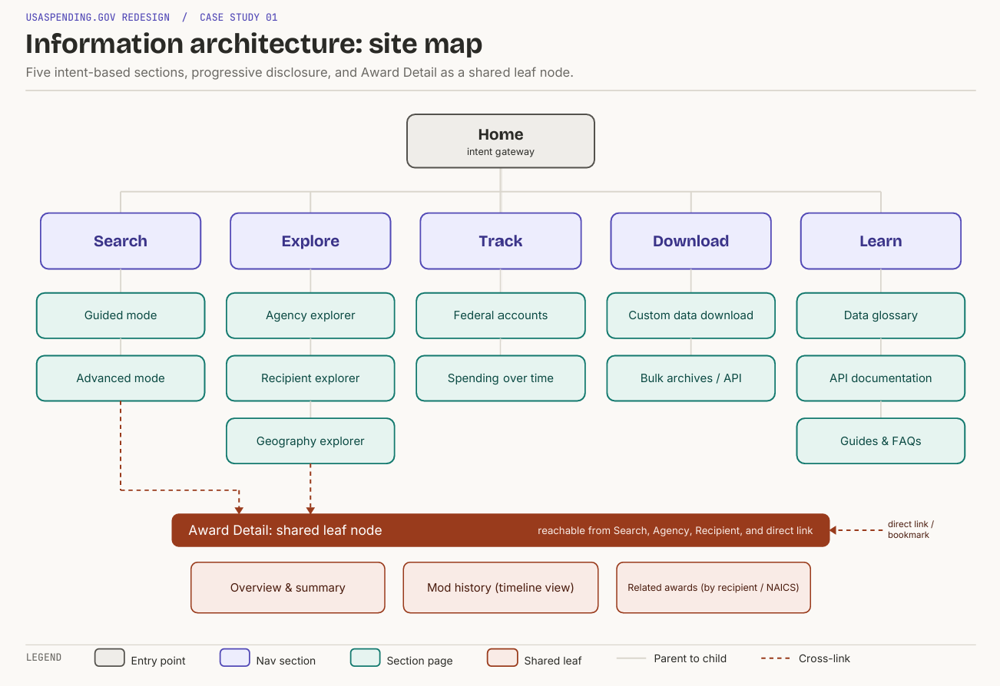
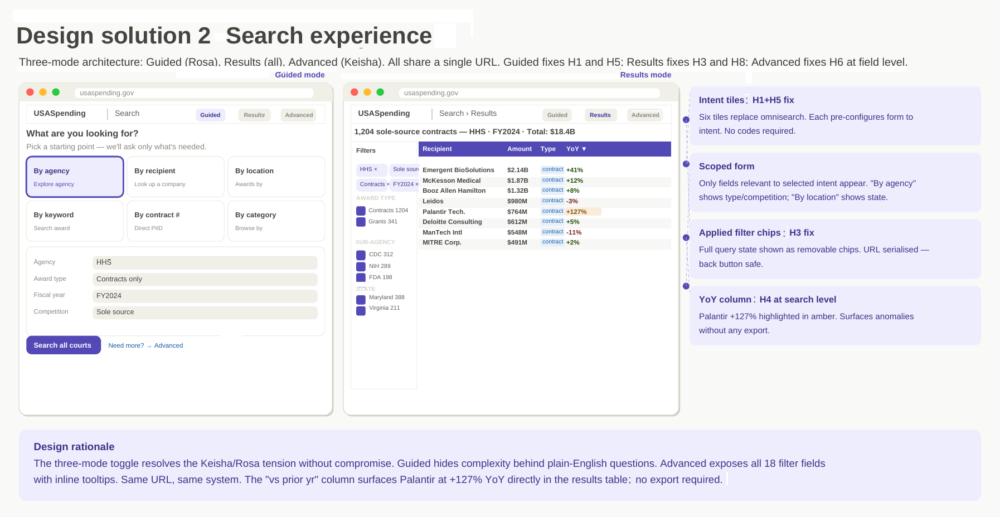
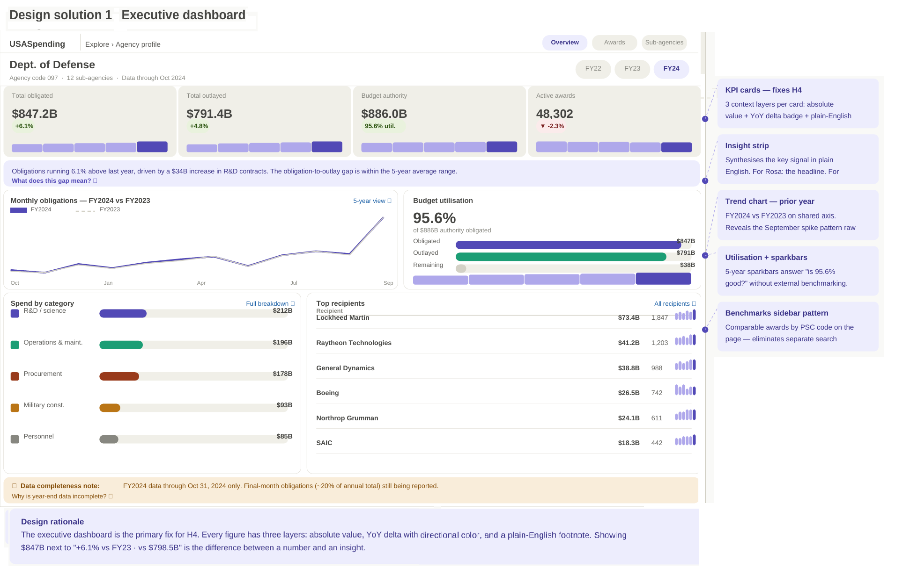

Investigative journalist
Following the money
- Goal
- Trace contracts and agencies fast enough to verify a story on deadline.
- Frustration
- Has to already know the taxonomy before the search box is useful.
Concept study · Federal spending transparency
Turning an open database of federal spending into something a journalist, a grant-seeker, or a curious citizen can actually use.
A self-directed concept study · Not affiliated with or endorsed by the U.S. Department of the Treasury
 -->
-->Overview
USASpending.gov is the official source for data on how the federal government spends public money. The dataset is comprehensive and genuinely open, but the experience is organized around the shape of the database rather than the questions people arrive with.
This self-directed study reimagines the platform around those questions, keeping the same underlying data while changing the path to it.
The problem
The site rewards people who already speak its language. Search assumes you know the taxonomy (awarding agency, recipient, NAICS code), and the default mental model is query-building, not exploration.
For the audiences the data is meant to serve, that is a wall. The information is present but not legible, so transparency stops at availability and never reaches understanding. Here are some example violations from the Usability/Heuristic Audit.
Research
I ran a heuristic evaluation against established usability principles, then modeled the people who come to public spending data and what defeats them. The recurring failures clustered around orientation, jargon, and the absence of any narrative scaffolding.
Following the money
Finding the funding
Seeing the whole picture
Information architecture
A guided "where does the money go?" entry point replaces the query-builder as the front door.
Plain-language summaries first, with the full records one deliberate step deeper for those who need them.
One vocabulary across the site, defined in place, so a term means the same thing everywhere it appears.
Any exploration can be saved and linked, so a journalist or analyst can hand someone the exact view.

-->USASpending.gov / Information Architecture Redesign
One representative task, two workflows. We follow a policy analyst who needs a single number: the total federal contract dollars awarded to one recipient in a fiscal year. The current path buries that answer behind search jargon; the redesign puts it first.
The task
Find total federal contract dollars awarded to one recipient for a given fiscal year.
The user
Policy analyst with moderate data literacy and no procurement background.
Success looks like
A trustworthy total on screen, with the option to break it down or export it.
Steps to answer
Distinct decisions
Dead ends and backtracks
Procurement terms surfaced
Time to first number
Search first, answer last. The analyst assembles filters before seeing whether any of it is right.
The homepage offers four competing paths: search, explore, agency profiles, and downloads. None is obviously the right start.
A blank keyword field sits above a rail of fifteen plus filter groups. Nothing indicates which ones this task needs.
Autocomplete expects a near exact legal name, and UEI and legacy DUNS identifiers surface before the analyst knows what they are.
Fiscal year versus calendar range, with no cue that the federal fiscal year starts in October.
Contracts, grants, loans, direct payments, and IDVs are listed side by side with no plain-language framing.
Results arrive as tabbed, dense tables rather than an answer. The total the analyst wants is not the thing on screen.
Abandon path: users with low confidence leave here.
A sub agency was set instead of the recipient. Correcting it means returning to the rail and losing the table's context.
Adjust, resubmit, and hunt once more for the aggregate figure across tabs and charts.
Answer first, refine second. Plain-language intent and smart defaults surface the number on arrival.
The homepage leads with one prompt and three intents: money to a recipient, spending by an agency, awards in a place.
Forgiving search with disambiguation cards. Location and parent company settle the match; identifiers stay behind plain labels.
Smart defaults (latest complete fiscal year, all award types, national scope) surface a headline total the moment the recipient resolves.
Change the year, narrow to contracts only, or add a location, all without leaving the summary or rebuilding the query.
Total, award count, and top awards sit in one card, with share and download within reach and the fiscal scope stated in words.
Design
The high-fidelity direction leads with narrative: a landing built around the questions people ask, then faceted exploration that stays in plain language, and record pages that explain a contract before they tabulate it.
The visual system keeps the data calm and scannable, using hierarchy and annotation to carry meaning rather than leaving it to the reader to assemble.
 -->
-->
-->
-->Outcome
The redesign is a proposal, not a shipped product. Its argument is simple: transparency is an interaction problem, not a data problem. Open access only counts as transparency once comprehension follows, and that last step is design work.
Full report
The extended report walks through the full heuristic audit, research, information architecture, and design rationale in depth.